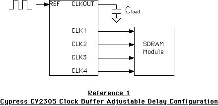

Defining the ProblemRAM module design is becoming ever more critical. Modules that previously worked in some older, slower Macintosh computers may experience intermittent problems--or may not work at all--in newer, faster machines. Trace lengths, noise, timing, and bus loading have all become critical concerns in today's high-speed systems. Problem AreasThe following lists some potential problem areas for RAM module designers:
Why This Hasn't Been As Much a Problem In the PastDesigning stable RAM memories has always been difficult, but the relatively slow speed buses of the past have allowed considerable margins in the designs. Pushing systems faster has generally resulted in pushing CPU speeds to new levels, and this will surely continue as the technology moves forward. However, this is becoming increasing difficult to accomplish. In order to squeeze more performance out of today's systems, memory and I/O speeds are being boosted, which also necessitates keeping the entire system in balance. As a result, we are increasing memory bus speeds in order to improve overall system performance as much as possible. These new higher bus speeds are exposing many limitations in traditional RAM module design. Design Considerations for Modern RAM ModulesThere are many techniques that may be applied to RAM memory designs that will help improve their stability. First, plan your design topology with care. Look carefully at signal line lengths and try to match them as closely as possible. Pay particular attention to the address bus, since this is usually the most heavily loaded. Furthermore, try to plan the simplest routing of each byte of the data bus. Give some thought to the placement of the RAMs and clock chips to accomplish these goals. If you plan on having stuffing options in your product (i.e., partially stuffed versions), be sure to place the stuffed RAMs at the end of the signal lines to avoid unterminated stubs. Moreover, make sure the loading of clocks is balanced in all possible stuffing options. Design your product for 100Mhz operation. Also, hand-route your critical signal paths, if possible. Many autorouters are not capable of doing a very good job with highly constrained signals. Even the autorouters that are capable might not be very efficient because of all the design constraints involved. Often these critical signals are better being hand-routed anyway, in order to accomplish the job in a reasonable amount of time. Keep in mind that if this is a new design threshold, it may take a couple of iterations of hand routing to get a feel for the actual design constraints. Plan for dedicated power and ground planes with bypass caps placed as closely to the RAMs as possible. Ensure an adequate number of vias from the connector pads to power and ground, and to the devices. One via for each power and ground pin per device is recommended. Twenty-five mil (.025) traces for power and ground pins is highly recommended, but under no circumstances should less than ten mil (.010) be used. Finally, use zero-delay buffers for the clocks. The Cypress CY2305 is a good example, and serves as a excellent solution for both memory and PCI clocking. This device will always attempt to adjust its CLKOUT signal for zero skew compared to the REF input. Because of this property, there are several design methods that can be used for the device: 
In Reference 1, the CLK1..4 outputs can be advanced or delayed by adjusting the
If there is no specific delay or advance required on the clocks relative to the REF, the Reference 2 design may be employed. In this case, Lastly, in order to increase memory density, some manufacturers are paralleling memories together. This technique is known as "stacking" or composite memories. Some designs exist that utilize a version of the stacking technology in which the individual RAM devices are soldered together on the substrate. This is simply a modern version of the composite memory products of several years ago in which multiple SIMM or DIMM modules were plugged into a single combiner substrate, which was then plugged into the host. Other techniques employ internal RAM device designs in which multiple die are actually wired in parallel inside the chip packaging. In both cases, bus loading and timing become critical due to the parallel bus nature of the architecture. At the time of this writing, Apple does not endorse either of these techniques, or any other technology based on device-stacking. Additional Notes & CommentsThe following are some important items that you may need to consider when working through the problem:
SummaryAs systems get faster, good stable RAM memory designs are becoming increasingly difficult to accomplish. However, products can be designed that behave well, provided enough care and thought is put into their design beforehand. ReferencesLow Cost 3.3V Zero Delay Buffer for PC and SDRAM, Cypress Semiconductor Corporation JESD 21 C Configurations for Solid State Memories Intel PC Memory Specifications Technote 1055: SIMMs to DIMMs: Making Sense Out of Memory Expansion for the Power Macintosh Technote HW33: Composite SIMMs Not Supported Downloadables
|